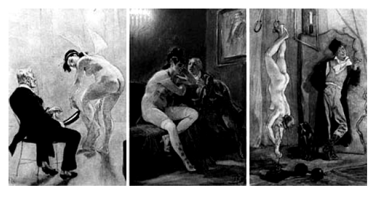

12.
Yeni soru şudur: Şikâyet mercii neden Brod’dur? 1902’de başlayan ve samimi biçimde süren dostluğa eklenen, söz konusu dergilere birlikte abone oluşun getirdiği suç ortaklığı değil elbette.
Kafka şikâyetlerini Blei’a değil Brod’a yazar; çünkü Brod da derginin yazarlarındandır ve Kafka’nın gözünde derginin kurumsal kimliğini o temsil etmektedir.
Brod dergide, hepsi takma adla, erotik aşk şiirleri ve cinsel güldürü tefrikaları yazmış; ayrıca yine aynı tarzın çevresinde dolanan küçük bir roman yayımlamıştır. Brod’un takma adla yazdığı yazılar, Prag’ın aydın çevresi (hele yakın dostu Kafka) doğal olarak biliyorlardı.
13.
Bu takma adlar, nerdeyse oyun kıvamında kaleme alınan erotik metinler ve sansürle (danışıklı dövüş kokan) köşe kapmacalar, dönemin ahlak anlayışı içinde nasıl değerlendirilebilir?
Sorunun yanıtı için, yüzyıl dönümündeki Orta Avrupa’ya bakmak gerek. Çünkü dönemin Orta Avrupası, ne Britanya gibi Viktoryen ahlaka ne de Akdeniz Avrupası gibi Katolik inanışına mahkûmdu. Viyana merkezli düşünce akımları, Avrupa’nın genelini saran iffet taslayıcılığa karşı çıkıyorlardı.
Sadece Amethyst/Opal değil, benzeri diğer dergileri de bu bağlamda değerlendirmek gerekir. Bu dergiler aydınlar tarafından, aydınlar için hazırlanan dergilerdi. Alt sınıflar için üretilen ucuz pornografik nesnelerden, nitelik olarak epeyi farklıydılar. Bu yüzden, toplumun en azından kimi tabakalarında örtük bir onay gördükleri söylenebilir.
14.
Elbette, tüm Orta Avrupa’yı yekpare bir kütle olarak görmemeli. Az önce Avrupa içindeki bakış fraklarından söz etmişken, Orta Avrupa içindeki bakış farklarını da belirtmek gerek.
Çok kalın çizgilerle belirtirsek, Avusturya-Macaristan İmparatorluğu ile siyasi birliğini yakın geçmişte sağlamış olan Almanya arasında hatırı sayılır fark olduğunu söylemeliyiz. Çokuluslu bir siyasi düzenek olan Avusturya-Macaristan İmparatorluğu, hoşgörü ve aydın tabakaların iletişimi kavramlarına daha sıcak yaklaşmak zorundaydı. Bu nedenle, sadece Viyana değil, Prag da büyük bir kültür merkezi olarak serpilmişti. Avusturya-Macaristan İmparatorluğu içindeki çokkültürlülük, avantgarde sanat ve düşünce akımları için verimli bir topraktı.
Almanya ise tek ulusun birleşmesi üzerine inşa edilmiş, genç bir devletti. Birlik düşüncesini oturtabilmek amacıyla, sanat akımlarına da tam anlamıyla tutucu bir yaklaşımla bakılmaktaydı. Bu nedenle, Berlin ve Viyana arasında büyük bir sanatsal rekabet (sanat anlayışı olarak da) yaşanıyordu.
15.
Hazır, Viyana ve Berlin arasındaki rekabetten söz açılmışken, Viyanalı sanatçıların ahlak anlayışına bakalım – bu yolla, söz konusu dergilere toplumun yaklaşımını daha kolay değerlendirebiliriz.
19. yy sonundan itibaren Arthur Schnitzler’in öncülüğündeki Viyanalı yazarlar, Freud’un çalışmalarını da kullanarak, yepyeni tarzda eserler üretmeye başladılar: Bilinçakışı tekniğinin ilkel biçimlerini kullanan bu eserlerde cinselliğin karanlık yanı sezdiriliyor, toplumsal ilişkilere cinsellik penceresinden bakılıyordu.
Cinselliği öne çıkaran bu hava, Hoffmannstahl çevresinde toplanan Viyanalı yeni-romantiklerde özellikle belirgindi. Bu sanatçı grubu cinsellik temalı eserlerle yetinmiyor, yaşamlarında da cinselliği eksene çekiyorlardı. Ünlü Viyana cafélerinde buluşan sanatçıların hemen hepsi metresler tutuyor, kimi geceler metreslerini değiş tokuş ediyor, cinsel deneyimlerini kamuya açık biçimde birbirleriyle paylaşıyorlardı.
Berlin’de ise, bu yaşama yozlaşmışlık ve ahlaksal çöküş gözüyle bakılıyor ve yayımlanan eserlere Yahudi düşmanlığını da içeren eleştirilerle yaklaşılıyordu (birkaç on yıl sonrasını düşününce, nasıl da tanıdık!).
Viyana’daki bu yaşam tarzı ve sanat anlayışının tüm topluma değil, sadece dar bir sanatçı/aydın çevresine ait olduğu söylenebilir elbette, nedir, Amethyst/Opal gibi dergiler de tüm topluma değil, o dar çevreye seslenmek üzere yayımlanıyorlardı.
16.
Hawes’in Schnitzler’le ilgili bir iddiasına değinmeden geçmeyelim. Hawes’e göre, Schnitzler Kafka’nın koleksiyonuna çok benzer bir malzeme toplamını babasına yakalatmış ve ararlında büyük bir kavga yaşanmış.
Hawes bu kavgadan yola çıkarak, Schnitzler ve Kafka ailelerindeki baba-oğul ilişkilerini kıyaslıyor. Ona göre, her ikisi de doktor olan Schnitzlerlerden baba olanı, Kafka’nın ünlü babası Hermann’dan daha baskıcı.
Kafka’nın babasından şikâyet etmek için her fırsatı kullandığını ve yaşamında ters giden her şeyden babasını sorumlu tuttuğunu, fakat bu suçlamalarda “avukatça numaralara başvurduğunu”[16] itiraf ettiğini de biliyoruz. Yine de, Hermann Kafka’nın oğlunun koleksiyonunu yakalamadığını ve benzer bir durumda nasıl davranacağını bilmediğimizi kabul etmeliyiz.
17.
Hermann Kafka’dan oğluna, Amethyst/Opal dergilerini okuduğu dönemin Franz Kafka’sına dönelim: Kafka 1906-07 yıllarında neler yapmıştı?
Kafka 1906’da 23 yaşındaydı. Hukuk öğrenimini bitirmiş, ünlü bilim adamı Alfred Weber’in yanında hukuk doktorasına başlamıştı. Aynı yılın Ekim ayından itibaren, avukatlık stajına geçmişti.
1907 yılında Assicurazioni Generali adlı uluslararası sigorta kuruluşunda çalışmaya başladı. Kafka daha sonra devlet denetimindeki bir sigorta kuruluşuna geçecek ve iş kazaları konusunda uzman bir hukuk adamına dönüşecekti.
18.
Yazar Kafka’ya gelince: Kafka 1907 yılı boyunca Taşrada Düğün Hazırlıkları adlı roman taslağı üzerinde çalışmıştı. Max Brod, yalnızca edebiyat çevrelerindeki sohbetlerde değil, yazdığı yayın organlarında da kendisinden söz ediyor, yetenekli bir genç yazar olduğunu herkese duyuruyordu (ilgideğer olan, Brod bunları yazdığında, Kafka’nın henüz yayınlamış tek satır yazısı yoktu!).
19.
Pekiyi Kafka’nın özel, haydi adını koyalım, cinsel yaşamı? Kafka’nın Brod sayesinde adı işitilmeye başlanan, iyi öğrenim görmüş, sadece Prag’da değil İmparatorluk sınırları içinde her yerde kullanabileceği yetkinlikte Almanca konuşup yazabilen, önünde iş olanakları açık bir kişi olduğunu unutmayalım.
Unutmamamız gereken diğer konu, Kafka’nın yirmili yaşlarının başında, sağlıklı ve 1.90’ı aşkın boyuyla, döneminin yakışıklı gençlerinden biri olduğudur.[17]
Prag’ın başkent Viyana’nın etkisinde süregiden sanatsal yaşamı içinde, Kafka’nın da diğer genç yazarlar gibi aktif bir cinsel yaşamı olduğu kuşkusuzdur. Zaten Brod ile birlikte çıktığı yolculuklar boyunca tuttuğu günlüklerde sezdirdiği serüvenler, bu yaşamın kendi ağzından kanıtıdır.
Tüberkülozun ilerlediği, birçok nişanın takılıp atıldığı bir döneminde, Ocak 1922’de yazdığı bir Günlük notunda, Kafka zamanında genelev ziyaretleri yaptığını da, bir tür günah çıkartma gibi itiraf eder: Geneleve istekle tasarlayarak gitmemiş ama “fırsat önüne çıktığında” geri çevirmemiştir.
20.
20. yy’ın başındaki toplumsal ilişkiler, aydın tabakayı şu tip bir ikili yapının içine sürüklemişti: Çağın gerekliliği olarak cinsel yaşam özgürleşiyor, aydın tabakalar bu özgürleşmeyi deyim yerindeyse züppeleştiriyor ama bu züppelikten avantgarde bir sanat yaratmayı da başarıyorlardı.
Öte yandan, kendi aralarında tamamen onayladıkları davranışlarını ailelerine açıklamakta zorlanıyor, tutucu bir ahlak yapısıyla yetişmiş üst kuşaklarla doğrudan tartışmaktansa, onlardan gizlenmek yolunu seçiyorlardı.
Amethyst/Opal ve benzeri dergilerin sadece abonelere özel basılmasının nedeni, sadece devletin sansür baskısı değil, aynı zamanda, devlete hakim olan ahlaksal yapıyla savaşacak denli güçlü olmayan ahlaki özgürleşmedir.
21.
Kafka’nın geç çıktığı için Brod’a şikâyet mektupları yazdığı dergi koleksiyonunu evde herkesten gizlemesi, bu bağlamda anlaşılabilir oluyor.
Kafka’nın ailesinden hiç kimseye bu dergilerden söz etmediği biliniyor. Söz etmek geri dursun, Kafka dergilerini odasındaki bir dolapta kilitli tutuyordu. Saklama duygusu öyle yoğundu ki, Brod ile birlikte çıktıkları uzun yolculuklarda, kilidin anahtarını evde bırakmıyor, her olasılığa karşı yanında taşıyordu.
22.
Kafka’nın ilerleyen yıllarda benzer dergileri okuduğuna dair bir ipucu (şimdilik) yok. Sadece, benzer dergileri bir koleksiyon olarak toplamadığına eminiz. Kendisinden geriye kalan her tür malzeme bir biçimde değerlendirildi. Sadece Gestapo’nun el koyduğu bir sandık dolusu elyazmasının akıbeti belirsiz; nedir, onlar arasında pornografiye uzaktan yakından benzeyen en ufak şeyi bile, Nazilerin Yahudi karşıtı kampanyalarında kullanacakları kesindi.
Kafka’nın heyecanla çıkmasını beklediği bu tür dergilerden neden yüz çevirdiği sorusuna verilecek iki yanıt var. Bunlardan ilki, Kafka’nın Brod’un çabalarıyla giderek ünlenen bir yazara dönüşmesi.
Hyperion’da ilk yazıları yayımlandıktan sonra, Kafka, en azından Prag’daki bir edebiyat hizbinin sınırları içinde, takip edilen bir yazar haline gelmişti. Bastırdığı yazıların ve kitapların hurufatları için titizlenen, kitap kapaklarında kullanılacak görsel malzemeye dek karışan, sözün kısası eserlerinin okuyucu gözünde “nasıl görüneceğine” bu denli önem veren bir yazarın, kendisinin okuyucu tarafından “nasıl görüleceğine” dair öngörüleri de olmuştur kuşkusuz.
Kafka az yayımlayan ama yayımladıkları üzerine ne düşünüldüğüne çok önem veren bir yazardı. Yayımladığı her kitaptan sonra, görüş ve eleştiri soran sayısız mektup kaleme aldığını unutmamalı.
Yazarlığı böylesine ciddiye alan bir kişinin, toplumun genelinin gözündeki yeri şaibeli yayınlarla haşir neşir olması, sadece gençliğinde mümkündür.

23.
İkinci neden olarak şunu söylemeli: Kafka yaşı ilerledikçe, geçkin bir bekâr olarak yaşlanmaktan giderek daha korkar oluyordu. Yirmili yaşların hızlı yaşantısı yavaşladıkça, özellikle bu yaşamdaki arkadaşları evlenip aile sahibi olduklarında, Kafka’nın yaşamında da değişiklikler oldu.
En güzel örneğinin Blumfeld öyküsünde görüldüğü üzere, Kafka evlen(e)memiş erkeklerin toplumsal yaşamdan nasıl yalıtıldıklarıyla yakından ilgiliydi. Sonuca ulaşmasa, hatta olumlu sonuçlarından ölesiye korksa da, dur durak bilmeyen nişanlılıkları ve evlilik tasarıları bilinmektedir.
İşinde güzel bir ilerleme sağlamış, aile kurma gereksinimi duyan Kafka bir yol ayrımına gelmiş, seçimini yapmıştır: Hızlı cinsel yaşamını giderek yavaşlatmış, cinsel duyguları harekete geçiren dergileri ise tamamen terk etmiştir.
24.
Dönemin toplumsal koşulları, sanat anlayışları ve Kafka’nın yaşamı göz önüne alındığında, aslında hiç de büyük tartışma potansiyeli taşımayan bu konu, neden bu denli çekişmeye yol açtı?
Bu sorunun yanıtını aramak, Kafka uzmanları arasındaki derin fay kırığını ve Kafka incelemelerindeki iki büyük okulun ayrışmasını bize buldurur.
25.
Hawes’in kitabına, özellikle pornografik yayınlar koleksiyonuna ilişkin en büyük eleştiri Rainer Stach’dan geldi.
Eleştirilerin Stach’dan gelmesi, ciddiye alınması için yeterlidir. Çünkü Stach, Kafka ile ilgili iki büyük yaşamöyküsü yazan, üçüncünün çalışmalarını Tel Aviv’de Max Brod’dan kalan mirası inceleyerek sürdüren, Felice Bauer’in evrak-ı metrukesini bir araya getirip Kafka’nın Gelini adlı uluslararası sergiyi hazırlamış Kafka uzmanı bir bilim adamıdır.
Stach’ın eleştirisinin temelinde, Hawes’in kitabının bilimsel bir araştırma olmadığı, çok satması için reklama gereksinimi olduğu, bu nedenle porno olayını öne çıkardığı vardı. Stach, söz konusu koleksiyonun zaten bilindiğini, bilinen bir konunun gereksiz şişirilerek sunulduğunu, hatta Kafka’nın haksız yere porno düşkünü gibi gösterildiğini iddia etti.
Hawes ise, Stach’ın kitabını okumadan eleştiri yaptığını öne sürüp, söz dalaşını handiyse Stach’ı haklı çıkaracak sulara sürüklemeyi becerdi.
26.
Stach’ın haklı olduğu konu, sözü edilen koleksiyonun Klaus Wagenbach’ın 1958 tarihli, Kafka’nın gençlik yıllarını anlatan yaşamöyküsü kitabından beri bilindiğidir. Kafka araştırmalarının piri (Kafka’yı Brod’un tekelinden kurtarıp laikleştiren kişi) olan Wagenbach, anılan çalışmasında Kafka ve Brod’un dergi aboneliklerini yazmıştır.
Gelgelelim, Hawes’in de haklı olduğu bir konu vardır: O günden bugüne, Kafka yaşamöyküleri ve araştırmalarında bu dergilerden söz etmekten elden geldiğince kaçınılmış, görsel malzemeleri ise hiç kullanılmamıştır.
Amethyst/Opal koleksiyonunun eksiksiz örnekleri Oxford Bodleian Kütüphanesi ve Londra’daki Britanya Kütüphanesi’nde incelemeye açık olmasına karşın, bu dergilere ilişkin Kafka’yı merkeze alan bir çalışma yapılmamıştır.
27.
Çalışma deyince, Anglo-Saxon ve Kıta Avrupası (özellikle Orta Avrupa) yöntemlerinin ve bakış açılarının farklılaşması konusuna geliyoruz.
Anglo-Saxon araştırmacılar daha çok olaylara yoğunlaşırken, Kıta Avrupalılar ruhsal durumlarla ilgileniyorlar. Dolayısıyla, ilk grup Kafka’nın yapıp ettiklerini öne çekerken, ikinci grup eylemlerin ardındaki güdüleri ve toplumsal dokuyu önemsiyor.
Bu yüzden, aslında birbirlerini bütünlemesi gereken iki anlayış, Kafka’nın yaşamında temel önemde olmayan bir konuda bile handiyse boğaz boğaza geliyorlar.
Aynı nedenle, bir yan Kafka’nın yapıtlarındaki mizahi boyutu ya da direnme nüvelerini, diğer yan dinsel göndermeleri ya da Freudçu noktaları Kafka’nın temel direği sayıyor ve diğerini tamamen yadsıyor.
28.
Anlayışlar bu denli farklı iken, Amethyst/Opal koleksiyonunun erotik mi, pornografik mi olduğu konusunda çıkan tartışma, elbette sürpriz değil!
Kıta Avrupalı araştırmacılar söz konusu dergilerin erotikten öte bir sıfatla nitelenemeyeceğini, Anglo-Saxon-lar ise dergilerin su katılmamış has pornografik olduğunu iddia ediyorlar.
Bu tartışmada turnusol kâğıdı görevi görecek soru ise, şu: Seçimimizi günümüzün ahlaki değerlerine göre mi, yoksa dönemin ahlaki değerlerini göz önüne alarak mı yapacağız?
29.
Hawes’in belki de tek bir sorusu burada önem taşıyor: Kafka’nın yolculuklarında kaldığı otellerin adları bile metinlerinde araştırılıp bulunuyor, yaşamında şöyle bir tanıyıp geçtiği her kişinin yansıması yarattığı karakterlerde aranıyor. Bu çalışmaların yapılmasında nerdeyse herkes hemfikir. Öyleyse, Amethyst/Opal’de yayımlanan Max Brod romanının baştan çıkan genç kızı ile Şato’da kendini Bay K.’ya sunan genç kızın aynı ada, Pepi’ye sahip olmaları, nasıl olur da hiçbir araştırmacının dikkatini çekmez?
30.
Büyük resme baktığımızda, asıl sorun şu mu: Bir yanda Kafka’yı edebiyat Pantheon’unun ermişi olarak niteleyip handiyse putlaştıranlar, diğer yanda tabulara karşı çıkma adına Kafka’nın yaşamındaki tali konuları yüksek sesle öne sürenler.
31.
Sonuç olarak, Michael Löwy’nin saptamasına katılalım: “Kafka üzerine yazılanlardan devasa bir ikincil edebiyat oluştu. Artık yorumları yorumlamak diye adlandırılabilecek üçüncül edebiyatı oluşturma aşamasındayız.”[18]
Bu zenginliğin içinde boğulmamanın tek çaresi kaynağa dönmek, Kafka’nın yazdıklarını yeniden ve yeniden okumaktır.